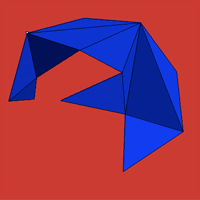
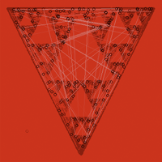
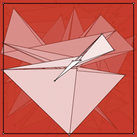
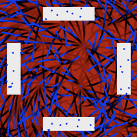
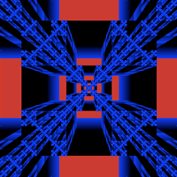
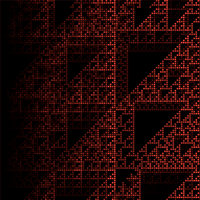
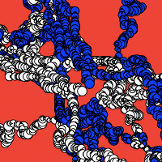
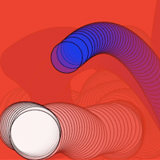

exercise log: 4 3 2 1 0 0: sketches related to mathematical structures and concepts. safari is recommended to view these sketches. <<
october 21-24 2005
1  2  3 
october 26-30 2005
4 5  6 
november 01-06 2005
7  8  9 